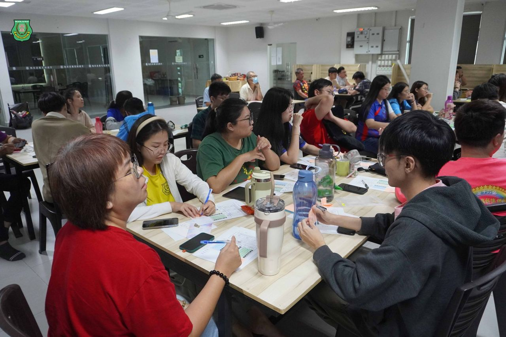
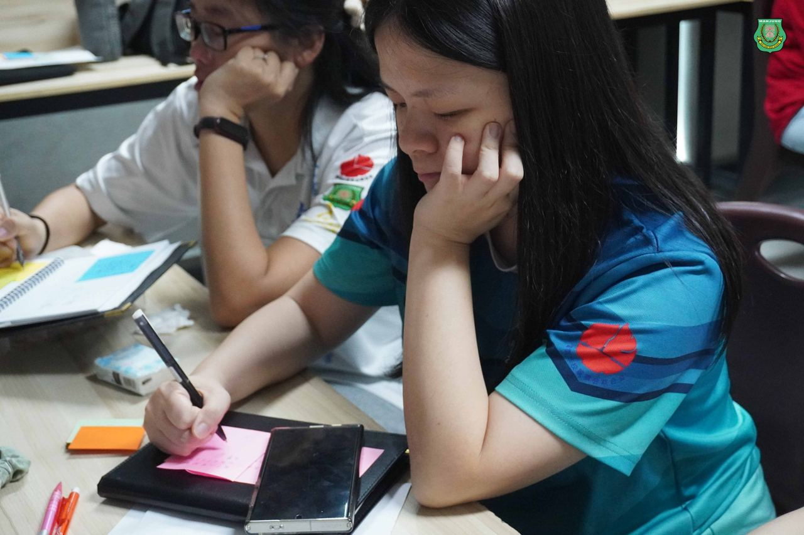
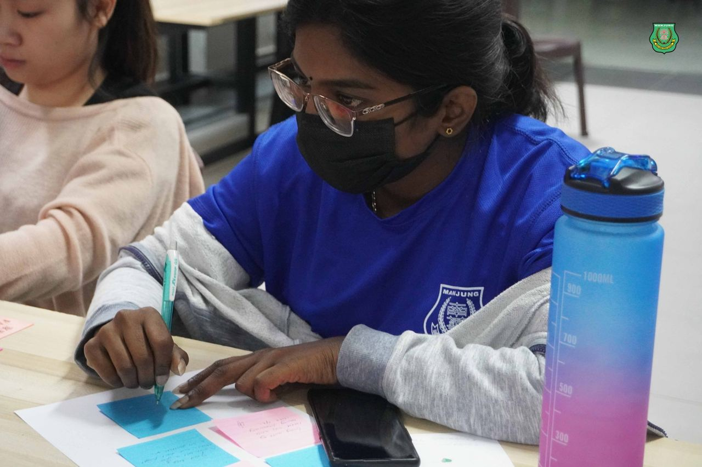
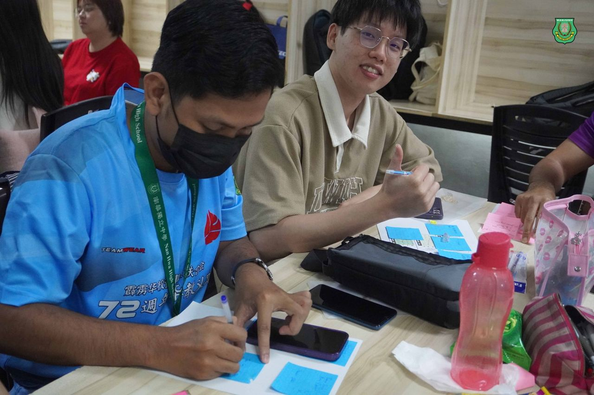
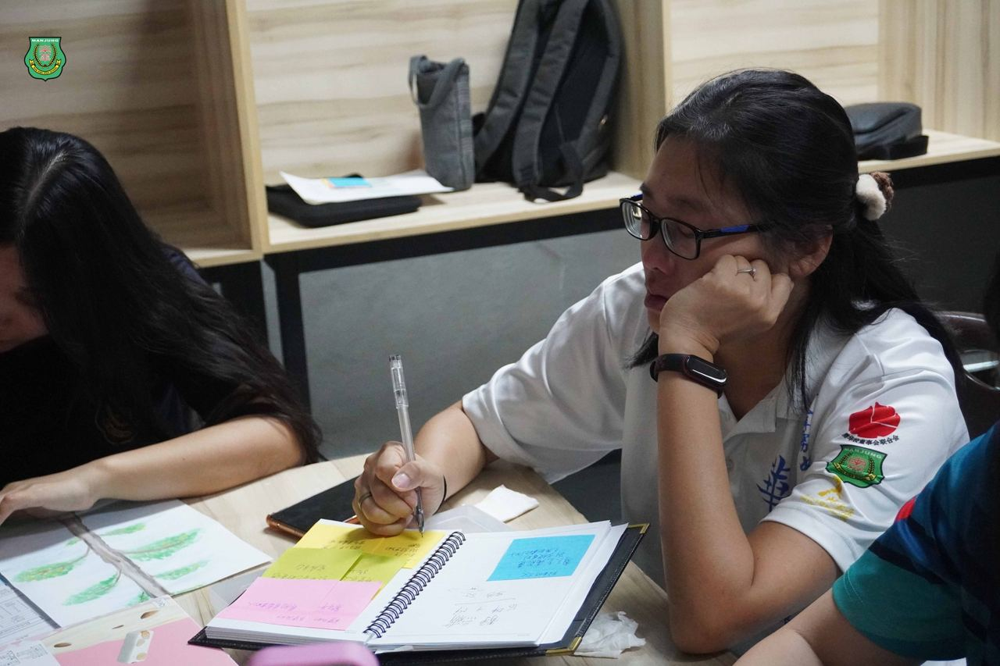
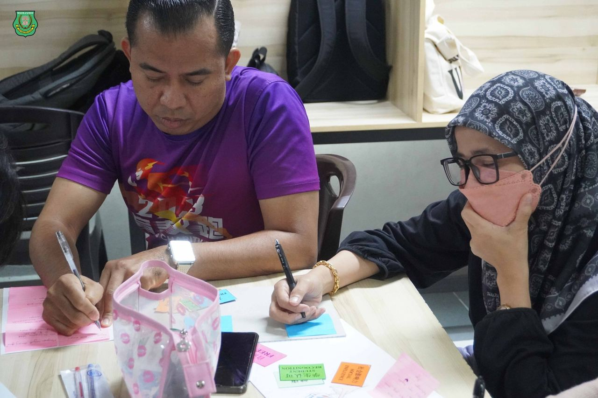
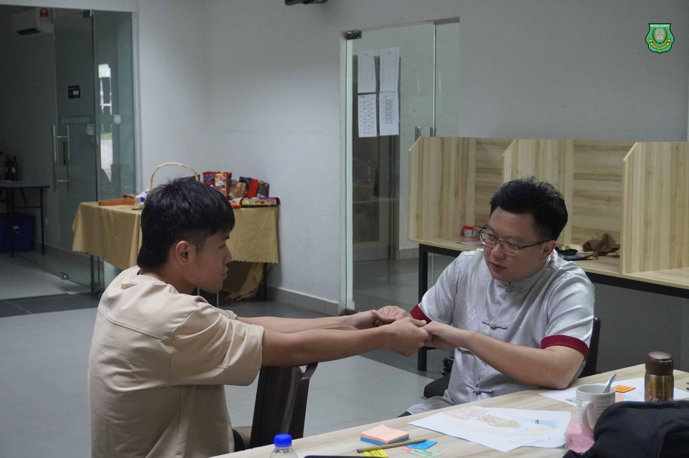
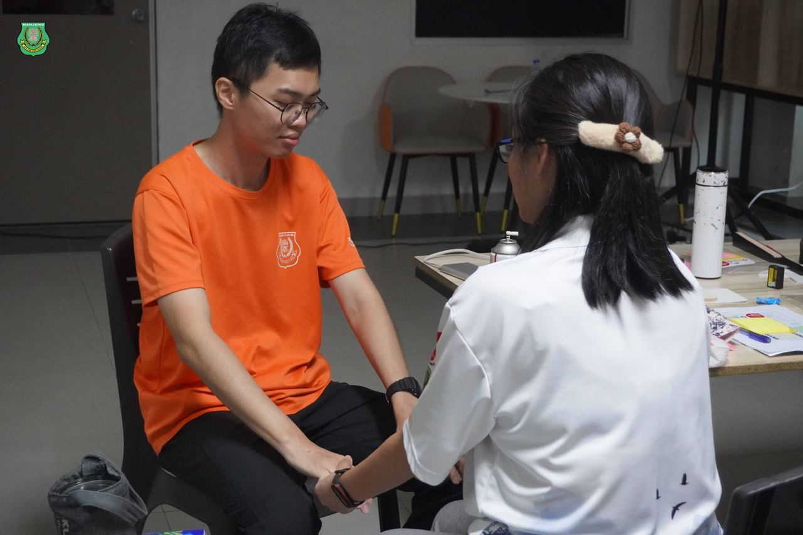

“教师幸福力”成焦点
“教师幸福力”成焦点
南华独中共识营共筑教育幸福感
2025年南华独中董家教共识营最后一日“教师幸福力”环节成为全场焦点。教师们暂时放下教学事务，全身心投入这场关于幸福感的深度探索，重新审视自己的教育初心，并在彼此的分享与交流中，寻找职业的意义与价值。
*教师的幸福感：从热忱到使命的追寻*
“教育是一种选择，而选择成为教师，意味着选择了一条不平凡的道路。”在共识营的开幕仪式上，本校校长陈丽冰博士强调，教师的职业不仅是授业解惑，更承载着对学生成长的深远影响。然而，在繁重的教学任务和现代教育挑战下，许多教师逐渐感到疲惫，甚至迷失了当初的热忱。她鼓励教师们在这三天里，放下束缚，深入自我，寻找幸福的真正源头。
这种思考在“教师幸福力”环节得到了进一步的深化。本次讲座围绕热忱（Passion）、天赋（Talent）、使命（Mission）三大核心展开，帮助教师厘清职业幸福感的关键要素，并结合心理学原理，探讨如何在教育生涯中找到满足感。
*热忱：驱动教师前行的动力*
讲座伊始，主持人向在场教师抛出了一个简单却深刻的问题：
“如果不考虑外在因素，你最想做的事情是什么？”
这个问题引发了全场的思考，许多教师在分享时提到，自己最初投身教育是因为对授业的热爱、对学生成长的期待、对成就使命的坚持。然而，在繁重的教学任务与行政工作中，他们渐渐遗忘了这种初衷。讲座强调，热忱是一种内在动力，它让教学不仅仅是一份工作，而是一种享受。
心理学研究表明，当一个人做自己热爱的事情时，大脑会释放多巴胺（Dopamine），让人感到愉悦。而在教学中，当教师全身心投入课堂，沉浸在教学的创造力与互动中时，会进入“心流体验（Flow）”，从而获得高度的满足感。因此，教师需要刻意培养自己的教学热忱，寻找让自己乐在其中的教学方式，而非陷入重复性事务的消耗中。
*天赋：幸福感来源于做自己擅长的事*
“幸福感不仅来自外部条件，还来自对自己能力的认可和发挥。”
在讲座的第二个部分，主讲人借由“九宫格字卡”带领教师们反思自己的教学初心——每位教师都怀揣着各自的目标与期待踏入教师行业，并且随着教学年资的增长而累积经验。主讲人提问“最近一次让你感到幸福”的提问，引导老师们回顾教学中的高光时刻，思考其中成就、意义和关系，最终得出了“培育学生人才是教师幸福感的根本来源”的结论。
此环节还设有两人为一组的交心环节，借由紧握对方双手，闭目回想自身教学生涯点滴以后，再彼此进行交流与分享，同时也在主讲人的引导下，正面肯定对方教师身份的优点，强化彼此对教师热忱、天赋与使命感，从而达到由外而内交流与探索教师幸福力的驱动力。
双手紧握，感受着来自对方传递的温暖与支持，部分老师在分享过程中不禁热泪盈眶，泪眼婆娑，从即是同侪又是伙伴的口中获得认可，肯定了自身在教育中牺牲奉献的意义与价值，印证了此活动已经达到其根本宗旨与用意。
*使命：教学不仅是传授知识，更是影响生命*
“如果今天是你最后一堂课，你想告诉学生什么？”
当这个问题被抛出时，现场教师们一片沉思，空气中弥漫着感性的气息。讲座的最后一部分聚焦于教师的教育使命（Mission），老师们纷纷写下各自的答案，并借由分享以后，发现彼此都曾经以各自的教育方式影响过的学生，或回忆起被学生回馈的感动瞬间。使命感是教师幸福感的核心，它让教师在困难时仍能坚持，让教育不仅是一份职业，更成为一种人生价值的实践。而所幸的是，“最后一堂课”并未真正来临。
*教师幸福感，不止关乎个人*
“教师的幸福不仅影响自己，也影响学生、同事，甚至整个学校的氛围。”在讲座的总结中，主讲人陈校长强调，幸福的教师更容易培养出快乐、自信、有动力的学生。而当教师能够找到自己的热忱，发挥自己的天赋，并坚守教育的使命时，他们不仅能成为更好的教师，也能成为更幸福的人。
共识营的这一环节不仅让教师们对自己的幸福感有了更深刻的认知，也促进了彼此之间的理解与共鸣。
“让我们在彼此的陪伴中找到共鸣，在思想的碰撞中凝聚共识，让这场营会成为我们教育生涯中一次难忘的心灵旅程！”校长陈丽冰博士在欢迎辞中的这句话，正好为“教师幸福力”环节做出了最好的总结。
在AI技术变革教育的时代，教师的角色在变化，挑战也在增加。但正如本次讲座所强调的，教育的核心永远是“人”——是温度、是情感、是使命。唯有幸福的教师，才能培养出幸福的学生，而这，正是教育最重要的意义所在。







